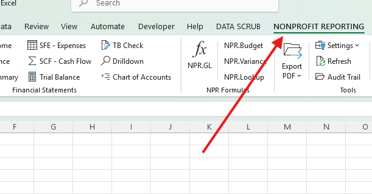

Statement of Financial Position
Presents assets, liabilities, and net assets using nonprofit classifications and links each line to the mapped ledger accounts.
Import the GL, review the financial classifications and functional allocations, then generate a controlled reporting package with reconciliation checks and transaction drill-down.

Generate the connected package after the Trial Balance control passes and the mapping and allocation reviews are complete.
Presents assets, liabilities, and net assets using nonprofit classifications and links each line to the mapped ledger accounts.
Reports revenue, support, expenses, and changes in net assets with and without donor restrictions.
Presents expenses by natural classification and function in the format nonprofit reporting requires.
Documents program, management and general, and fundraising allocations with bases, residuals, notes, and tie-outs.
Builds the indirect-method cash flow statement and connects changes back to the financial statements.
Creates an optional eight-column, account-level workpaper with automatic balance control for audit support and review.
NonprofitReports does not hide mapping or allocation judgment. It suggests classifications, highlights items requiring review, and keeps unallocated expenses visible until they are resolved.
The workbook’s Start Here sheet tracks import, reconciliation, classifications, SFE allocations, statement generation, and final review/export. Reporting dates remain authoritative and refresh the connected reports together.
Generate, refresh, drill down, export, and inspect the audit trail from one ribbon tab.
Downloading the EXE, opening the launcher, or opening Excel does not begin the trial. Internet access is required when the first licensed feature confirms the protected machine identity.
The server records one fixed expiry for the protected machine identity. Reinstalling does not reset it.
A signed local cache supports short periods between verifications but never extends the trial expiry.
The trial service does not receive the workbook or general-ledger contents; it receives protected identifiers and licensing status data.
Use the seven-day trial with the provided sample GL or a copy of your own export before licensing.
The full guide covers import, mappings, every report, the SFE workpaper, drill-down, formulas, and troubleshooting.